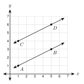
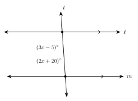
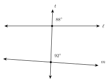

1.4 Parallel Lines and Transversals
- Tell parallel, perpendicular, and skew lines apart
- Name the pairs of angles made by a transversal
- Find angles when parallel lines are cut by a transversal
- Use angle measures to decide if two lines are parallel
Warm-Up
1.4.1Parallel, Perpendicular, and Skew Lines
- Parallel lines are in the same plane and never . Symbol: . Matching mark them.
- Perpendicular lines cross to make . Symbol: .
- Skew lines are not in the same . They do not meet and are not parallel.


a. Parallel to AB:
b. Perpendicular to AB:
c. Skew to AB:
a. Name an edge parallel to AD.
b. Name an edge skew to BC.

Slope of AB:
Slope of CD:
The slopes are , so the lines are .
1.4.2Angles Made by a Transversal


| Pair | Where they are | Example |
|---|---|---|
| corresponding | ||
| alternate interior | ||
| alternate exterior | ||
| same-side interior |
a. ∠2 and ∠6
b. ∠4 and ∠6
a. ∠2 and ∠7
b. ∠3 and ∠7
c. ∠4 and ∠5
1.4.3Parallel Lines and the Eight Angles
Corresponding angles are . Alternate interior angles are . Alternate exterior angles are .
Same-side interior angles are (they add to ).
| Angle | Measure | Reason |
|---|---|---|
| ∠2 | ||
| ∠3 | ||
| ∠4 | ||
| ∠5 | ||
| ∠6 | ||
| ∠7 | ||
| ∠8 |

The marked angles are , so they are .
x = Each angle:

The marked angles are , so they add to .
x = Angles: and
a. Alternate interior angles measure (2x + 25)° and (3x − 5)°.
b. Same-side interior angles measure (4x + 2)° and (2x + 16)°.
1.4.4Are the Lines Parallel?

88° 92°. The corresponding angles are , so the lines are .

a. A transversal makes same-side interior angles of 104° and 76°.
b. A transversal makes alternate interior angles of 65° and 115°.
1. Lines that cross at right angles are . Lines in space that never meet and are not parallel are .
2. A crosses two lines and makes 8 angles.
3. If the lines are , corresponding and alternate angles are .
4. If the lines are parallel, same-side interior angles add to .
5. We trust marks and measures, not how the lines look.
Practice
Parallel, Perpendicular, and Skew
1. Parallel to AE
2. Perpendicular to DC
3. Skew to DC
On the Coordinate Plane
4. The line through (0, 0) and (6, 2), and the line through (0, −3) and (6, −1).
5. The line through (0, 0) and (3, 6), and the line through (0, 0) and (−4, 2).
6. The line through (1, 2) and (5, 8), and the line through (2, 4) and (6, 9).
Name the Pair and Find the Angles

7. ∠4 and ∠8
8. ∠2 and ∠7
9. ∠4 and ∠5
10. ∠3 and ∠5
11. m∠1 = 128°. Find m∠5, m∠6, and m∠3.
12. m∠7 = 52°. Find m∠2, m∠4, and m∠8.
Solve for x
13. Alternate interior angles measure (5x − 8)° and (3x + 14)°.
14. Corresponding angles measure (8x − 3)° and (6x + 17)°.
15. Same-side interior angles measure (7x + 4)° and (3x + 6)°.
16. Alternate exterior angles measure (3x + 12)° and (5x − 18)°.
17. In the figure above, m∠2 = (4x + 8)°, m∠6 = (6x − 14)°, and m∠4 = (3y + 2)°. Find x, y, and the three angles.
Real Problems

18. A diagonal avenue crosses two parallel streets. Find a and b.
a = b =
19. Two rails of a train track are parallel. A cable crosses both. One of the eight angles is 72°. Every angle is one of two numbers. What are they?
Find the Mistake
20. ℓ ∥ m. Ana has same-side interior angles (2x + 10)° and (3x − 5)°. She says same-side interior angles are equal, so 2x + 10 = 3x − 5 and x = 15. What did she do wrong? Find the correct x.
Are the Lines Parallel?
21. A transversal makes corresponding angles of 74° and 74°.
22. A transversal makes alternate interior angles of 65° and 115°.
23. Same-side interior angles measure (3x + 10)° and (2x + 20)°. Find x so that the lines are parallel.
24. Two lines in a drawing look parallel. No arrows and no angles are given. Can you say they are parallel? Explain.
Test Practice
A. 18°
B. 54°
C. 70°
D. 110°
A. Corresponding angles are supplementary.
B. Alternate interior angles are equal.
C. Same-side interior angles are equal.
D. Vertical angles are supplementary.